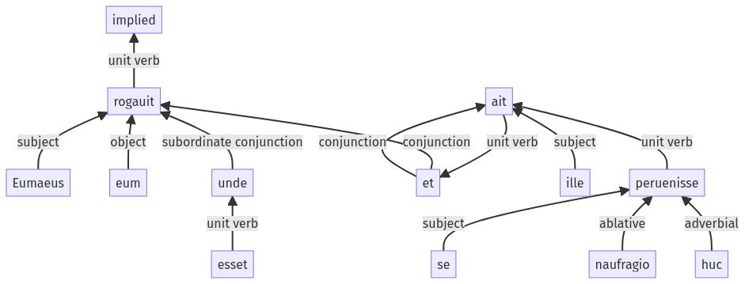

Hyginus, Fabulae, 126a.2.1-126a.2.12a
126a.1.30-126a.1.47a | 142a.1.1-142a.1.8a
Sentence 1276
126a.2.1-126a.2.12a
Eumaeus eum rogauit unde esset, et ille ait se naufragio huc peruenisse.
1 Eumaeus eum rogauit
2 unde esset
1 et ille ait
2 se naufragio huc peruenisse
Eumaeus eum rogauit unde esset, et ille ait se naufragio huc peruenisse.
Highlighting:
- connecting words
- unit verb
- subject
- object
Color code:
- independent clause (level 1, transitive verb)
- subordinate clause (level 2, linking verb)
- independent clause (level 1, transitive verb)
- indirect statement (level 2, intransitive verb)
